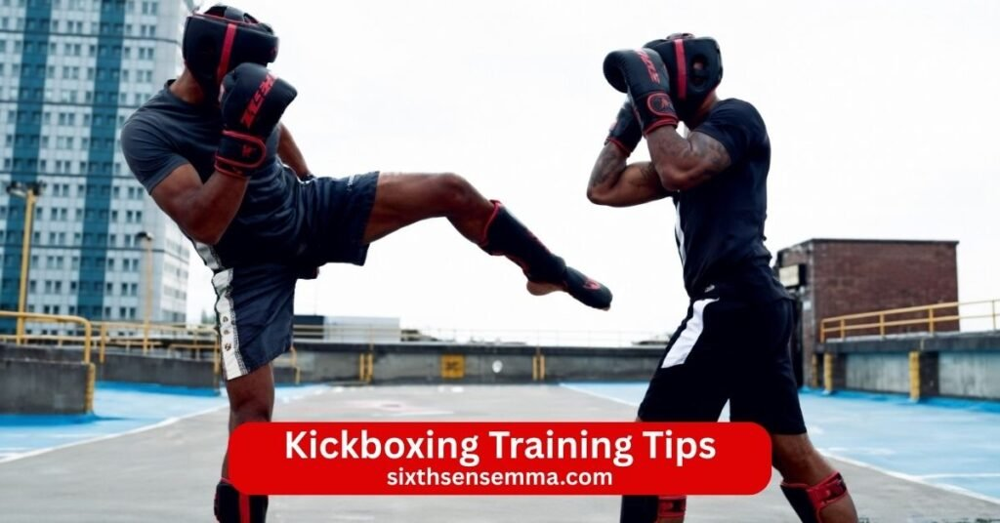

Top 10 Kickboxing Training Tips to Improve Your Strength and Techniques

Kickboxing training tips help anyone start and improve in this exciting martial art that mixes powerful punches kicks and fast footwork. Kickboxing builds real strength speed coordination and self defense skills while giving a full body workout that feels fun and challenging. Beginners can learn basics like jab cross hook uppercut front kick roundhouse kick and low kick safely through proper form and drills. Whether you practice shadowboxing heavy bag work or join kickboxing classes at a good gym these tips guide you to train smart avoid injury and enjoy the kickboxing journey. Focus on technique balance rest and consistency to get the benefits of kickboxing and become a better kickboxer over time.
- Start with Proper Warm-Up and Stretching
- Focus on Learning the Correct Technique
- Maintain Proper Fighting Stance and Balance
- Practice Consistent Footwork and Movement
- Build Strength and Conditioning
- Improve Speed and Reaction Time
- Train Your Core for Powerful Strikes
- Stay Consistent with Your Training Routine
- Use Proper Safety Gear During Training
- Train with Professional Coaches
1. Start with Proper Warm Up and Stretching
Always begin kickboxing training with a good warm up and stretching to prepare your body. Light jogging jumping jacks or shadowboxing gets your heart rate up and loosens muscles. Stretch your legs hips shoulders and arms to improve range of motion. This step helps you avoid pulls or strains during punches kicks or roundhouse kick practice. A solid warm up makes every session smoother and lets you train harder without holding back.
2. Focus on Learning the Correct Technique
Learning correct technique matters more than throwing hard at first. Work on proper form for every punch like jab uppercut and rear hand strikes. Practice kicks such as front kick low kick side kick and roundhouse kick with the right hip turn and balance. Watch how coaches or experienced kickboxers move and copy their form. Good technique builds speed and power while protecting your joints and helping you strike your target accurately.
3. Maintain Proper Fighting Stance and Balance
A strong fighting stance keeps you balanced and ready for offense and defense. Stand with feet shoulder width apart lead hand forward rear hand protecting your face and knees slightly bent. Keep weight on the balls of your feet so you can move quickly. This stance lets you throw a punch or kick without losing balance. Good balance helps you defend against attacks and stay steady during close range combat.
4. Practice Consistent Footwork and Movement
Footwork is key in kickboxing so practice moving forward backward and sideways smoothly. Use small steps pivot on your lead foot for kicks and circle your opponent to control distance. Drill footwork every session to make it natural. Good movement lets you avoid strikes set up punches and kicks and stay safe. Consistent footwork turns you into a harder target and improves your overall kickboxing skills.
5. Build Strength and Conditioning
Add strength training to your kickboxing program for better power and endurance. Bodyweight exercises like push ups squats and planks build muscle in your core lower body and upper body. Heavy bag work and shadowboxing add conditioning that makes you last longer in rounds. Stronger muscles help you throw harder punches and kicks and recover faster between efforts. Regular strength work puts you in the best shape for kickboxing.
6. Improve Speed and Reaction Time
Work on speed and reaction time through fast drills and partner work. Throw quick jab combinations shadowbox at high speed and practice dodging imaginary punches. Spar lightly with a partner to react to real movements. Use focus mitts or pads for timing drills that sharpen your reflexes. Building speed lets you land punches and kicks before your opponent can respond.
7. Train Your Core for Powerful Strikes
Your core powers almost every strike so train it regularly. Exercises like twists medicine ball throws and planks strengthen your abs and obliques. A strong core transfers force from your lower body to your punches and kicks. It also helps you stay balanced during roundhouse kick or defensive moves. Core training makes your strikes faster and more explosive.
8. Stay Consistent with Your Training Routine
Consistency turns small efforts into big results so stick to your kickboxing routine. Train three to five days a week with rest days to recover. Mix gym sessions bag work and practice at home for variety. Even short daily shadowboxing keeps skills sharp. Listen to your body and take easy days when needed. Steady training builds kickboxing skills faster than irregular hard sessions.
9. Use Proper Safety Gear During Training
Always use proper safety gear to protect yourself during kickboxing training. Wear boxing gloves to protect your hands and wrists shin guards to shield your shins and mouthguard for sparring. Wrap your hands correctly before bag work or pads. Safety gear lets you train harder and longer without worry.
10. Train with Professional Coaches
Train with professional coaches at a good gym to learn faster and avoid mistakes. Coaches teach essential kickboxing techniques correct your form and create safe sparring. They help you progress from beginner to advanced levels and focus on your weak points. A coach guides you through close combat drills offense and defense and keeps training fun. Professional guidance makes your kickboxing journey safer and more effective.
Common Mistakes Beginners Make in Kickboxing Training
Beginners often jump into kickboxing with excitement but end up making simple mistakes that slow progress or cause setbacks. These errors happen because kickboxing demands focus on form balance and recovery from day one. Spotting and fixing them early keeps training safe enjoyable and effective. Many new kickboxers push too hard too soon without the right foundation which leads to frustration or injury instead of steady gains in punches kicks and overall skill.
Ignoring Proper Form and Technique
One of the biggest mistakes beginners make is ignoring proper form and technique. They focus on throwing hard punches or kicks without learning how to do them correctly. For example they drop their hands when punching lean too far forward on kicks or lock their knees during movement. This bad habit reduces power makes strikes less accurate and leaves the face open to counters.
Poor technique also strains wrists elbows knees and lower back over time. Beginners should slow down and drill basics like jab cross hook uppercut front kick and roundhouse kick with coaches watching. Good form builds real speed and power while protecting the body. Fixing technique early turns weak sloppy strikes into clean effective ones that land where intended.
Skipping Warm Ups and Recovery
Skipping warm ups and recovery is another common beginner mistake that leads to problems. New kickboxers sometimes rush straight into heavy bag work or sparring without warming up properly. Without light cardio dynamic stretches or mobility drills muscles stay cold and joints stiff which raises the chance of pulls strains or soreness. Recovery gets ignored too when people train every day without rest days or listen to their body during fatigue.
Overtraining causes shin soreness joint pain and burnout that forces long breaks. Beginners should always start sessions with ten to fifteen minutes of warm up like shadowboxing jumping rope or light movement. After training ice sore areas stretch gently and take at least one or two rest days each week. Proper warm ups prepare the body for intense work and good recovery lets muscles repair and grow stronger for the next session.
How Professional Training Improves Kickboxing Skills
Professional training changes kickboxing from casual exercise into real skill development. A good coach and structured environment fix bad habits build confidence and push progress faster than training alone. Beginners and experienced kickboxers both benefit because professionals see details the average person misses. At a quality gym like Sixth Sense MMA professional guidance turns effort into measurable improvement in technique power endurance and self defense ability.
Structured Training Programs
Structured training programs make kickboxing skills grow steadily and safely. Instead of random workouts professionals create clear plans that progress from basics to advanced levels. Beginners start with stance footwork simple punches and basic kicks. As skills improve the program adds combinations speed drills bag work and light sparring. Each phase builds on the last so nothing feels overwhelming. Structured programs include strength conditioning core work and recovery built in which prevents plateaus. Kickboxers follow a logical path that targets weak areas and celebrates small wins along the way. This organized approach keeps motivation high and helps people reach goals like better fitness stronger strikes or practical self defense much faster than unstructured training.
Personalized Coaching and Feedback
Personalized coaching and feedback stand out as the biggest advantage of professional training. A coach watches every move corrects mistakes instantly and explains why changes matter. For example they might adjust your jab to protect your chin fix hip rotation on roundhouse kick or teach you to keep your rear hand up after punching. Feedback is specific to your body skill level and goals so you improve exactly where needed.
Coaches also track progress over weeks and adjust drills to match your pace. Personalized attention prevents bad habits from forming and builds confidence because you know exactly what to work on. In a group class the coach still gives individual tips during rounds which makes every session feel tailored. This direct guidance turns beginners into capable kickboxers and helps experienced ones break through plateaus.
Why Choose Sixth Sense MMA Kickboxing Training Program?
Sixth Sense MMA stands out as the best place for kickboxing because it combines expert teaching real results and a welcoming atmosphere that keeps people coming back. The kickboxing program focuses on building fitness strength self defense skills and confidence in a way that fits your life. Trainers understand kickboxing deeply and create an environment where beginners feel supported and experienced fighters find new challenges. Every part of the program from classes to equipment helps you progress safely and enjoy the process.
Certified and Experienced Trainers
The trainers at Sixth Sense MMA hold certifications in kickboxing boxing and related martial arts with years of hands on experience. They have competed taught and trained continuously so they know what works for different bodies and goals. During sessions they watch every punch kick and movement to correct form right away. For example they fix how you throw a jab to keep your chin protected or adjust your roundhouse kick for better hip rotation and power.
Beginners get patient step by step guidance while advanced students receive detailed feedback on timing strategy and conditioning. This level of expertise makes training more effective and helps you improve faster than you would on your own or at a less professional gym.
Beginner to Advanced Level Classes
Sixth Sense MMA offers classes that work perfectly for everyone from complete beginners to advanced kickboxers. Beginner classes start with the basics stance balance simple punches jabs crosses hooks and front kicks. You learn proper technique footwork and how to protect yourself without feeling overwhelmed. Intermediate classes add combinations speed bag work and light pad drills to build flow and power.
Advanced sessions include complex combos heavy sparring timing drills and conditioning specific to competition or self defense. The progression feels natural because each level builds on the last. Small class sizes let trainers give attention to every student so no one gets left behind or held back. You always train at the right level and see clear improvement in skills fitness and confidence week after week.
Modern Equipment and Safe Training Environment
The gym features modern equipment and a safe training environment that makes every session productive. Heavy bags focus mitts thai pads double end bags and speed bags stay in excellent condition for consistent use. The flooring provides good grip and cushion to reduce impact on joints during kicks and footwork. Lighting ventilation and space are set up well so you stay comfortable even during intense rounds.
Safety comes first with clean gear regular maintenance and trainers who enforce proper warm ups cool downs and technique. Protective equipment like gloves shin guards and wraps is available and kept hygienic. This setup lets you focus fully on training without worrying about old tools or unsafe conditions. The modern safe space supports better performance longer sessions and faster progress.
Flexible Training Schedule
Sixth Sense MMA provides a flexible training schedule that fits real life especially for busy people in Coppell and nearby areas. Multiple class times run throughout the week including early mornings evenings and weekends so you can find slots that match work family or other commitments. You can attend as often as your schedule allows without strict limits on sessions.
Drop in options and package deals make it easy to stay consistent even if some weeks are hectic. The flexibility means you never have to skip training because a time does not work. People with demanding jobs parents and students all find ways to make kickboxing part of their routine. This approach keeps motivation high and helps you build steady habits for long term results.
Contact US
If you want to start kickboxing training learn proper technique improve your fitness build self defense skills or just come see the gym and talk to the trainers we are ready to help.
- 817 S MacArthur Blvd #100 Coppell TX 75019 United States
- (469) 972 7800
- info@sixthsensemma.com
Conclusion
Kickboxing training offers a complete way to build fitness strength coordination and real self defense skills while keeping every session fun and challenging. From mastering proper punches kicks and footwork to improving speed power endurance and mental focus the benefits show up in your body mind and confidence. Beginners start slow with basics and grow steadily while experienced kickboxers push limits and refine technique. Consistency proper form safety gear and rest days make progress safe and lasting. Mistakes like skipping warm ups or ignoring technique get fixed quickly with good habits and guidance.
Follow Us on Social Media
Stay connected with Sixth Sense MMA through our social media channels. Follow us for class updates, training tips, and a closer look at our self defense community.
FAQ’s
To get better at kickboxing focus on consistent daily practice with proper technique. Train three to five days a week mixing heavy bag work pad drills and light sparring. Drill basics like jab cross hook uppercut front kick roundhouse kick and low kick until they become automatic. Work on footwork to move smoothly and control distance. Build strength through bodyweight exercises squats push ups planks and core work. Improve speed with fast combinations and reaction drills. Listen to your body take rest days and recover well. Train with a good coach for feedback and join kickboxing classes to spar safely and learn from others. Track progress film yourself and fix mistakes. Stay patient consistency and smart training turn beginners into skilled kickboxers over months.
Yes kickboxing is good for bone density because it involves weight bearing impact activities. Punches against bags or pads send force through your arms shoulders and hands. Kicks especially roundhouse and side kicks put stress on your legs hips and shins. This impact stimulates bone remodeling similar to running jumping or weightlifting. Regular training helps maintain or increase bone strength particularly in the lower body and upper limbs. It is especially helpful for adults to fight age related bone loss. Combine it with good nutrition calcium vitamin D and rest for the best results. Studies on high impact sports show positive effects on bone health when done safely with proper form.
The best way to learn kickboxing is to join a quality gym with experienced certified trainers. Start with beginner kickboxing classes where coaches teach proper stance footwork basic punches and simple kicks step by step. Focus on technique first before adding speed or power. Practice shadowboxing daily at home to build muscle memory. Use heavy bag work and focus mitts to feel impact. Get personalized feedback from coaches to correct form early. Spar lightly when ready to apply skills in real time. Watch videos of good kickboxers but always follow your coach. Train consistently three to five days a week and be patient. A good gym environment with structure and support makes learning faster safer and more enjoyable than self teaching.
Two days a week is enough for kickboxing if your goal is general fitness staying active learning basics and having fun. You will improve coordination burn calories build some strength and gain confidence in punches and kicks. Progress will be slower than training more often but you can still see real benefits like better cardio mood and basic technique. Add short home sessions of shadowboxing or footwork drills on off days to keep skills sharp. Eat well sleep enough and stay consistent. For faster gains in power speed or competition level aim for three or more days. Two days works well for busy people as a solid starting point or maintenance routine.
The hardest kick technique in kickboxing is usually the spinning back kick or the jumping switch kick. Spinning back kick requires perfect timing balance and rotation while turning your back to the opponent. You need strong core control quick pivot and accurate aim to hit the target without losing balance. Jumping switch kick adds complexity because you jump switch stance mid air and deliver a powerful kick. Both demand high coordination flexibility timing and practice to land cleanly without telegraphing. Many kickboxers find these kicks difficult due to the risk of missing or countering. They look flashy but take months of drilling to use effectively in sparring or fights.
Kickboxing rules vary by organization but common things not allowed include strikes to the groin back of the head spine or joints like knees from certain angles. You cannot hit a downed opponent kick or punch to the back of the head or use illegal throws in some styles. Elbow strikes are banned in many kickboxing rulesets though allowed in Muay Thai. No biting holding clinching too long or using the head to strike. Fouls like excessive clinching or low blows lead to warnings point deductions or disqualification. Always follow the specific rules of your gym promotion or competition to stay safe and fair.
To increase kick power focus on hip rotation and full body involvement. Start with proper form pivot on your support foot turn your hips fully and drive through the kick with your core and leg muscles. Strengthen your legs hips and core with squats lunges deadlifts and rotational exercises like medicine ball throws. Practice roundhouse kick and side kick on heavy bag to build impact feel. Use resistance bands for kick drills to add load. Improve speed first because faster kicks carry more force. Drill combinations ending with kicks to chain power from punches. Condition your shins gradually with light bag work. Rest recover and stretch to stay flexible. Consistent practice with good technique builds real kick power over time.
The 20 second rule in boxing means the referee gives a fighter up to 20 seconds to recover if knocked down or hurt. If the fighter gets up within 20 seconds the fight continues. If they cannot stand or defend themselves after 20 seconds the referee stops the bout usually as a knockout or technical knockout. This rule protects fighters from taking unnecessary damage while giving a fair chance to recover. It applies mostly to knockdowns but referees use judgment for other situations where a fighter needs time. The exact timing can vary slightly by sanctioning body but 20 seconds is the standard in most professional boxing rules.
Train with us in Coppell
The first class is free. Shorts, a t-shirt and a water bottle. We lend the rest.
Book a free class